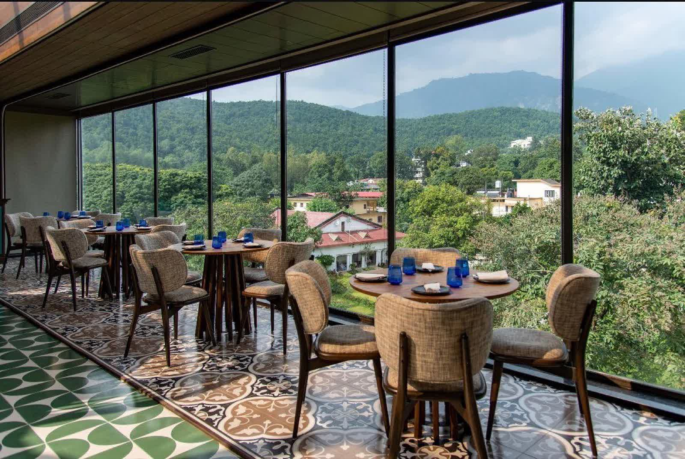
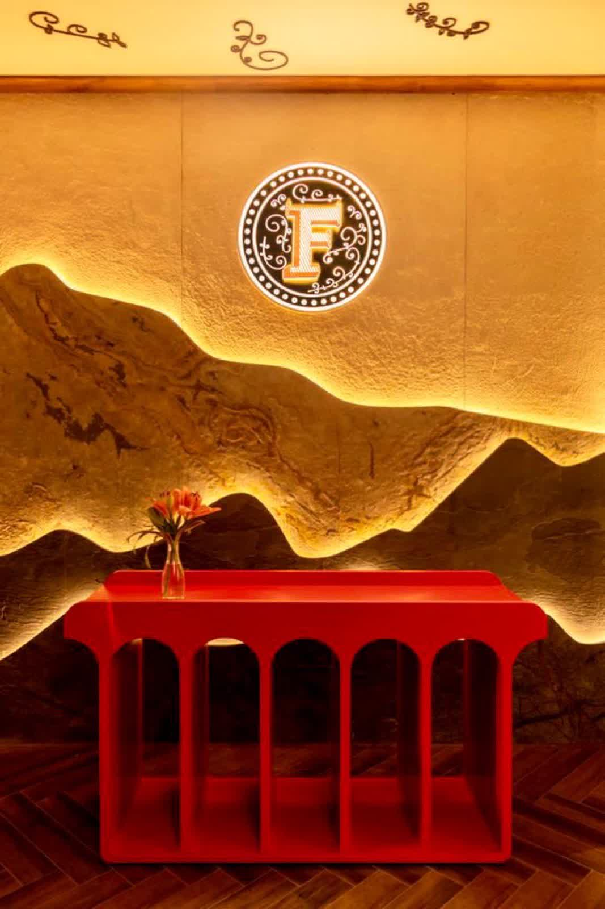
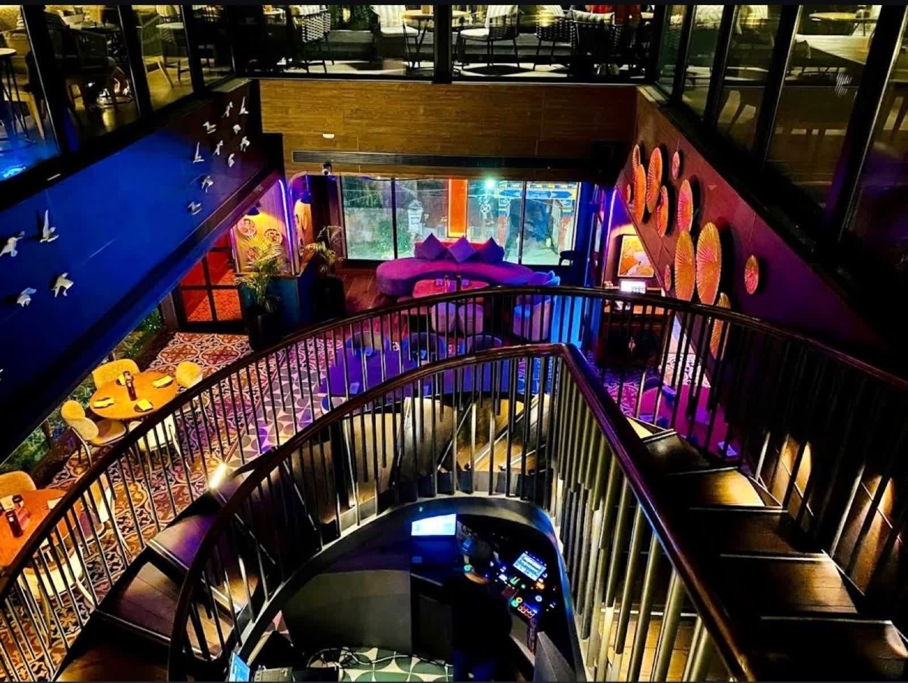

Born in Cyber Hub, Gurgaon in 2014. Twelve cities, two continents, more awards than we can hang. Now lighting up Rajpur Road from a rooftop above 222, Dhakpatti.

In Hindi-Urdu street language, farzi means an illusion, a sleight-of-hand, something that looks like one thing and turns out to be another. That, in a word, is our cooking.
We take India's most familiar dishes — dal chawal, butter chicken, ras malai, pani puri — and reimagine them through Western technique, foam guns, smoke domes, dehydrators and freeze-drying. The first bite always knows where it is from. The second bite makes you smile.

Our menus are built on three rules. One: the spice must always lead. Whatever the technique, the dish must taste recognisably, defiantly Indian. Two: the plate must move you — visually, emotionally, theatrically. Three: nothing on the menu can take longer than 20 minutes from order to table.
Behind those rules sits a 12-strong kitchen team led by Chef Aman Bisht, formerly of Indian Accent and Bukhara, who moved home to Uttarakhand to open the Dehradun kitchen in 2026.
Founders Zorawar Kalra and Massive Restaurants open the original Farzi Café in Gurgaon's Cyber Hub. Modern Indian cuisine for a generation that wants nostalgia with a wink.
The concept rolls out to Lower Parel and Hyderabad. Wins the EazyDiner award for Best Modern Indian Cuisine, two years running.
Farzi opens in Dubai's City Walk, the first of an international rollout. London, Bangkok and Toronto follow.
The Farzi map expands to twelve cities. We're now one of India's most-loved modern Indian dining concepts.
Farzi opens its first rooftop in the hills, on the top floor of 222, Dhakpatti. Floor-to-ceiling Mussoorie views, an onyx-lit bar and six private cabanas under brass canopies.
Best Modern Indian Cuisine · 2018, 2019, 2022, 2024
Best Innovative Restaurant · 2020, 2023
Top 50 Restaurants in India · 2021, 2022, 2023, 2024
India's Best Restaurant Brand · 2023
Dehradun is where India's hills begin. It's a city of literature and lychee orchards, of crumbling cantonments and a new generation of restaurants. We came here because the people who walk into our doors aren't tourists — they're locals who know Robber's Cave, Char Dukan, and which paranthe-wallah opens earliest on Rajpur Road.
We came here to feed them dal chawal arancini in a glass of Mussoorie air. And, occasionally, the visiting honeymooners.
Plan Your Visit